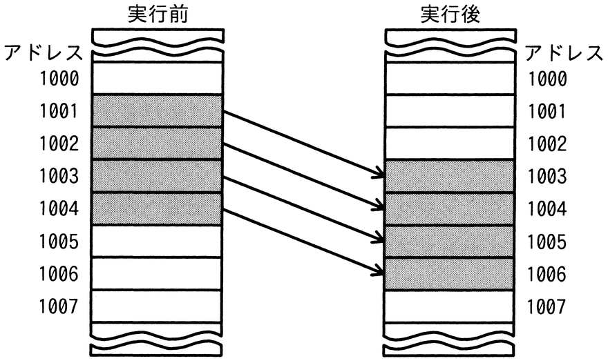
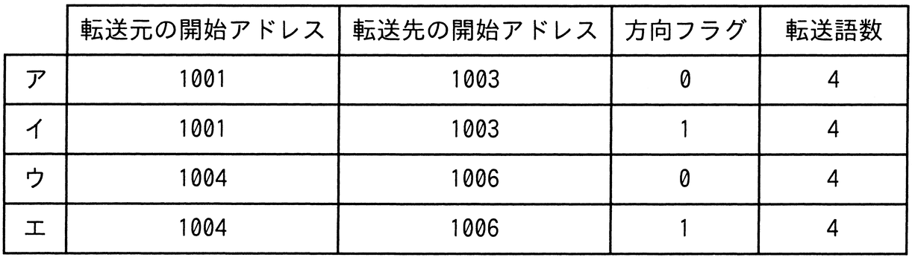

同一メモリ空間で，転送元の開始アドレス，転送先の開始アドレス，方向フラグ及び転送語数をパラメータとして指定することによって，データをブロック転送できる機能をもつCPUがある。図のようにアドレス1001から1004のデータをアドレス1003から1006に転送するとき，指定するパラメータとして適切なものはどれか。ここで，転送は開始アドレスから1語ずつ行われ，方向フラグに0を指定するとアドレスの昇順に，1を指定するとアドレスの降順に転送を行うものとする。

